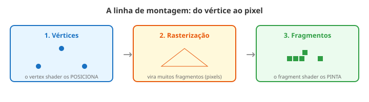

Até aqui sua tela era um retângulo plano (um quad). Hora de sair dele: vamos desenhar um
objeto 3D de verdade — um cubo — que gira na sua frente. E você vai ver que, por baixo, continua
sendo o mesmo jogo de pintar pixels.
1. Um objeto é feito de pontinhos
Todo objeto 3D é uma malha: um monte de pontos no espaço (os vértices)
ligados em triângulos. Um cubo tem 8 cantos; a GPU liga esses cantos em triângulos e preenche as
faces. Olhe o cubo abaixo girando — cada quina é um vértice.
A tela é plana, mas o cubo parece 3D. Como? Alguém precisa decidir ONDE, na telinha 2D, cada
cantinho do cubo aparece — levando em conta a profundidade e a rotação. Quem faz essa conta?
2. Dois trabalhadores: quem posiciona e quem pinta
Aqui entra a novidade. No Marco 1 você só escrevia uma coisa: a cor do pixel (o
fragment shader). Agora aparece um segundo trabalhador: o vertex shader.
O vertex shader roda uma vez por vértice e decide a
POSIÇÃO de cada ponto na tela.
O fragment shader (seu velho conhecido) roda por pixel e decide a
COR.
Neste curso, o vertex shader já vem pronto pra você (ele faz a conta da posição). Você continua
escrevendo só a cor — como sempre. Quer espiar o vertex pronto? Está na caixa abaixo.
👀 Espiando o vertex shader pronto (você não precisa editar)
Ele recebe a posição de cada vértice e a multiplica por uma matriz mágica (a
u_mvp) que cuida da rotação, da perspectiva e de projetar o ponto 3D na tela 2D:
gl_Position = u_mvp * vec4(a_position, 1.0);
Você não precisa montar essa matriz — o motor monta pra você. Por enquanto,
basta saber: ela leva o ponto 3D pro lugar certo da tela.
3. A matriz MVP e a linha de montagem
Aquela matriz u_mvp faz três coisas de uma vez: move, gira e projeta
o objeto na tela. É uma caixa-preta por agora (no próximo módulo a gente entende as ferramentas por
dentro). O caminho completo, do ponto à imagem, é a linha de montagem (o pipeline):

Vértices → rasterização (vira pixels) → fragmentos pintados. Você programa as pontas; o meio é automático.
Test Drive: pinte o cubo do seu jeito
O cubo abaixo deixa você editar só a COR (o fragment). Tente colorir pela posição
(v_worldPos) ou pela coordenada da face (v_uv). Dê Test Drive e
veja girar.
🗣️ Dois sotaques: e no Unity (HLSL)?
A ideia é idêntica: existe um vertex e um fragment; a matriz vira float4x4 e a
multiplicação se escreve quase igual. Clique 🔁 Ver em HLSL pra comparar (é
ilustrativo — o 3D de verdade do Unity tem mais detalhes que veremos adiante).
O vertex shader pinta alguma coisa?
Não! Ele só POSICIONA os vértices. Quem pinta é o fragment. Confundir os dois é o tropeço
nº1 deste módulo.
Preciso entender a matriz MVP agora?
Não. Ela é caixa-preta por enquanto: leva o ponto 3D pra tela. No Módulo 8 a gente abre as
ferramentas (vetores) que explicam a intuição.
Por que o cubo tem "cantos" de cor?
Porque você está colorindo pela posição/face de cada ponto. Cada face do cubo tem suas
coordenadas — e elas viram cor.
Vertex posiciona, fragment pinta. Não tente "pintar" no vertex nem "mover
vértice" no fragment — cada trabalhador tem seu papel na linha de montagem.
Objeto 3D = malha de vértices ligados em triângulos.
Vertex shader decide a POSIÇÃO (1×/vértice); fragment decide a COR (1×/pixel).
A matriz u_mvp (caixa-preta) move, gira e projeta o ponto 3D na tela.
Pipeline: vértices → rasterização → fragmentos. Você programa as pontas.
Recordação: caça ao par
Ligue cada termo ao seu significado (escreva a letra):
( ) vértice A. decide a posição de cada ponto na tela
( ) vertex shader B. um ponto da malha 3D
( ) fragment shader C. transforma triângulos em pixels